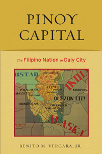

Examining the double lives of Filipino American immigrants
Examining the double lives of Filipino American immigrants


 Examining the double lives of Filipino American immigrants
Examining the double lives of Filipino American immigrants

|  |
Pinoy CapitalThe Filipino Nation in Daly CityBenito M. Vergara, Jr.paper EAN: 978-1-59213-665-0 (ISBN: 1-59213-665-6) |
"Pinoy Capital is a colorful and nuanced ethnographic foray into the social institutions and quotidian lives of Filipino Americans living in Daly City. Vergara is a gifted writer and his work delves closely on the affective and reciprocal relationships and practices of Filipino Americans as immigrants. This is a welcome and important study, and Vergara puts forward important and innovative assertions and arguments that will have repercussions on debates about Filipinos in the United States."
—Martin Manalansan, University of Illinois, Urbana-Champaign, and editor of Cultural Compass: Ethnographic Explorations of Asian America
Home to 33,000 Filipino American residents, Daly City, California, located just outside of San Francisco, has been dubbed �the Pinoy Capital of the United States.� In this fascinating ethnographic study of the lives of Daly City residents, Benito Vergara shows how Daly City has become a magnet for the growing Filipino American community.
Vergara challenges rooted notions of colonialism here, addressing the immigrants� identities, connections and loyalties. Using the lens of transnationalism, he looks at the �double lives� of both recent and established Filipino Americans. Vergara explores how first-generation Pinoys experience homesickness precisely because Daly City is filled with reminders of their homeland�s culture, like newspapers, shops and festivals. Vergara probes into the complicated, ambivalent feelings these immigrants have�toward the Philippines and the United States�and the conflicting obligations they have presented by belonging to a thriving community and yet possessing nostalgia for the homeland and people they left behind.
Excerpt available at www.temple.edu/tempress
"Pinoy Capital is a landmark text�an exciting, refreshing, and critical ethnography that continues, but revitalizes, ongoing conversations regarding Filipino immigrant/transnational life in the United States. There have been very few ethnographies of this group, and I think this one not only offers a much-needed and provocative study, it complicates arguments and discussions about the specificities of Filipino immigration to the U.S. Vergara provides solid and rigorous engagement with his objects of study, and he is especially attuned to the clarities and complexities of everyday life in a particular site that is touted as a quintessential one for Filipino American settlement."
—Rick Bonus, Associate Professor, Department of American Ethnic Studies, University of Washington
"[A] dynamic and thought-provoking study on the lives and history of Filipino immigrants in America, specifically in what is known as the 'Pinoy capital of the United States.'... Pinoy Capital is far from being a colorless, skin-deep examination of the Filipino immigrant experience. It is rich and meticulous in its presentation of statistics and historical material, and constructively elaborate and diverse in its dissection of its subject matter. What's more, Vergara propounds the topic of Daly City's Filipino community by effectively combining journalist immediacy with academic rigor. His analytical skills and profound insight on Daly City's Filipinos are fused with the overwhelming need to understand a topic that has rarely been studied to this extent....Vergara's book...sets a new standard for analyzing Daly City's pervasive sense of 'Filipinoness' and for keenly observing the impact that Filipinos in the Philippines have had on their expatriate countrymen and women in America."
— Filipinas
"Pinoy Capital is significant in the way that Vergara unpacks questions related to socioeconomic standing and the tangible trappings of class among Filipinos in Daly City.... Pinoy Capital serves several functions for courses, including California, Filipino/a, Asian American, and ethnic studies, in examining the rise of a suburban community in terms of immigration legislation, public policy, shifting demographics, the role of consumer cultures, and the complexities of 'belonging.'"
— Western Historical Quarterly
"With keen eyes and wit, Vergara carefully observes, describes, and assesses not only his respondent's answers, but the social, political, and cultural context of the respondents' statements....Rich in empirical material meticulously situated and adeptly analyzed, Pinoy Capitol offers many scholars a starting point for [their] own research."
— Contemporary Sociology
"This intriguing and empathic study of Filipinos in Daly City, California, situates the diasporic Filipino community that is resident in the United States, and challenges the rhetoric of colonial and post-colonial discourse in the light of emergent identities and relations with the homeland.... Along with a rich presentation from ethnographic interviews, Vergara also marshalls Pinoy representations from the Philippine News published in Daly City for the Pinoy community.... Vergara argues effectively that the Filipino disapora is not a simple migration or colonial exploitation."
— The Philippine Quarterly of Culture and Society
"Vergara perceptively observes the everyday practices of transnationalism in Filipino ethnic businesses, including the ethnic media�s reprinting of Philippine news items on its front page....The study is most effective when it juxtaposes nationalist ideologies with interviewees� varied definitions and categories.... Pinoy Capital is significant for its attention to such nuances of contemporary immigration."
— The Journal of American Ethnic History
1. A Repeated Turning
2. Little Manila
3. Looking Forward: Narratives of Obligation
4. Spreading the News: Newspapers and Transnational Belongings
5. Looking Back: Indifference, Responsibility, and the Anti-Marcos Movement in the United States
6. Betrayal and Belonging
7. Citizenship and Nostalgia
8. Pinoy Capital
Bibliography
Index
Benito M. Vergara, Jr. is the author of Displaying Filipinos: Photography and Colonialism in Early 20th-Century Philippines. He lives and works in the San Francisco Bay Area.
Asian American Studies
Asian Studies
Anthropology
Asian American History and Culture, edited by K. Scott Wong, Linda Trinh V�, and Cathy Schlund-Vials.
Founded by Sucheng Chan in 1991, the Asian American History and Culture, series has sponsored innovative scholarship that has redefined, expanded, and advanced the field of Asian American studies while strengthening its links to related areas of scholarly inquiry and engaged critique. Like the field from which it emerged, the series remains rooted in the social sciences and humanities, encompassing multiple regions, formations, communities, and identities. Extending the vision of founding editor Sucheng Chan and emeriti editor Michael Omi and David Palumbo-Liu, series editors K. Scott Wong, Linda Trinh V�, and Cathy Schlund-Vials continue to develop a foundational collection that embodies a range of theoretical and methodological approaches to Asian American studies.
© 2015 Temple University. All Rights Reserved. This page: http://www.temple.edu/tempress/titles/1920_reg.html.